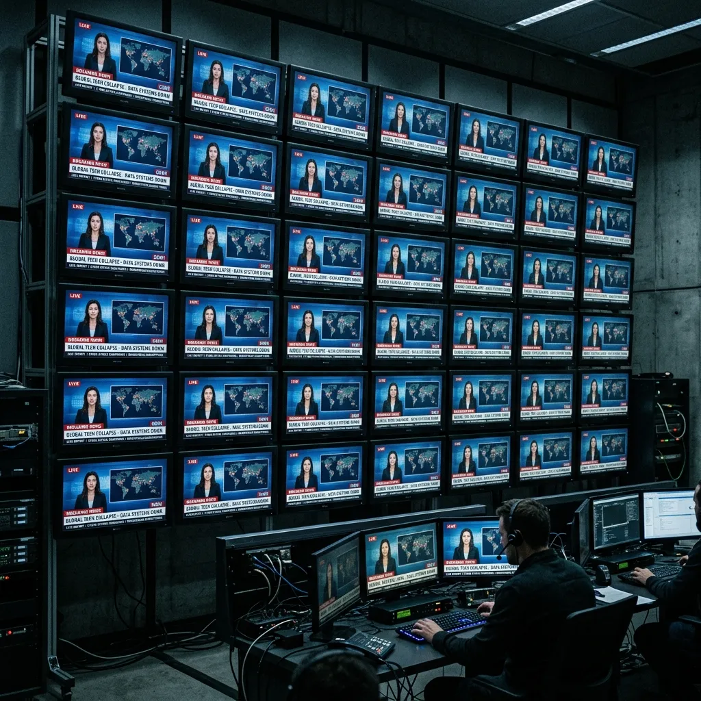

A Tática de Manipulação
engenharia social aplicada pelas grandes redes de comunicação tem como pilar o domínio prévio do campo moral. Utilizando o deslocamento estratégico da **Janela de Overton**, editores corporativos conseguem normalizar pautas outrora consideradas absurdas, enquanto tornam intoleráveis posicionamentos que costumavam ser a base de bom senso da sociedade civil.
Ao blindar consensos de forma antecipada, as redações não buscam convencer pelo debate, mas pela coerção intelectual. O questionador de pautas governamentais é automaticamente retirado do campo do debate técnico e colocado no banco dos réus morais. Cria-se o estigma social necessário para forçar a autocensura e desmembrar redes orgânicas de questionamento.
"A manipulação moderna não consiste em mentir descaradamente, mas em estruturar o debate de modo que qualquer conclusão divergente pareça um desvio de caráter moral."
— Análise de Redação, Divisão de Guerra Cognitiva
Evidência 01: Sincronia Editorial - Sistemas de monitoramento integrado comprovam a adoção simultânea de narrativas e vocabulário tático nas redações nacionais.
A Autópsia (Fatos Frios)
Para desmantelar a propaganda coordenada, precisamos examinar a mecânica operacional através da análise fria de dados e registros. O aparelhamento do sistema tradicional de comunicação sustenta-se em eixos principais de atuação:
Uniformidade de Linha Editorial
Memorandos internos revelam que redações outrora concorrentes utilizam diretrizes de vocabulário comuns e agendas sincronizadas para blindar a imagem de políticos e punir canais dissidentes sob pretextos regulatórios.
Aparelhamento Regulatório
A coordenação direta entre agências governamentais, redes de checagem privadas (fact-checkers) e consórcios de imprensa para a exclusão financeira e banimento algorítmico de portais conservadores independentes.